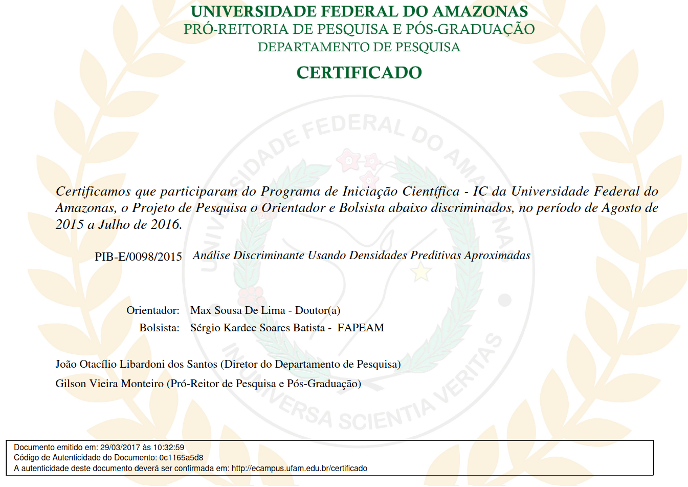
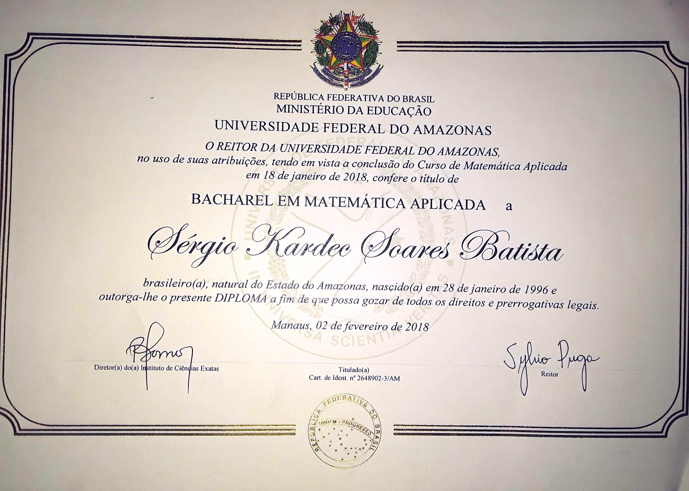
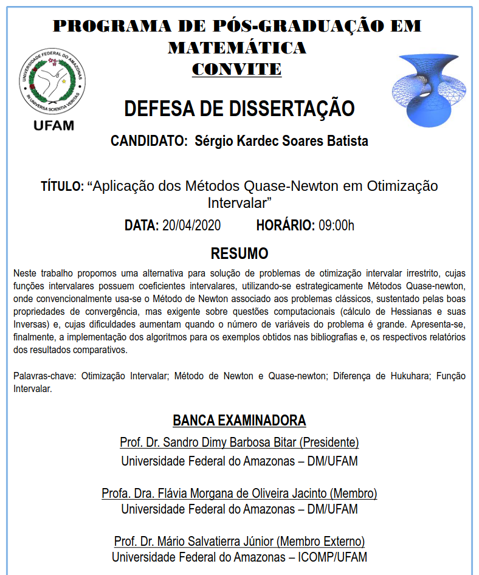
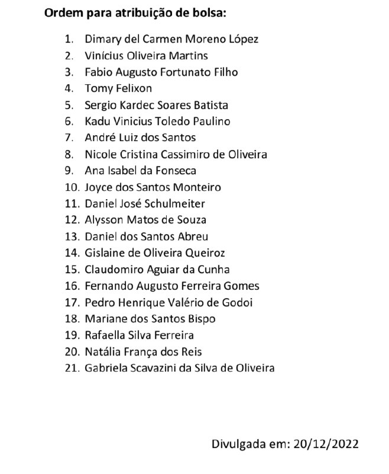
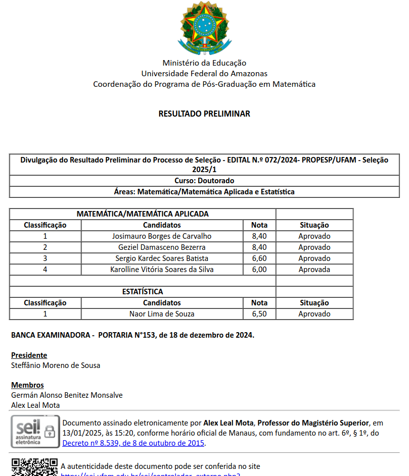
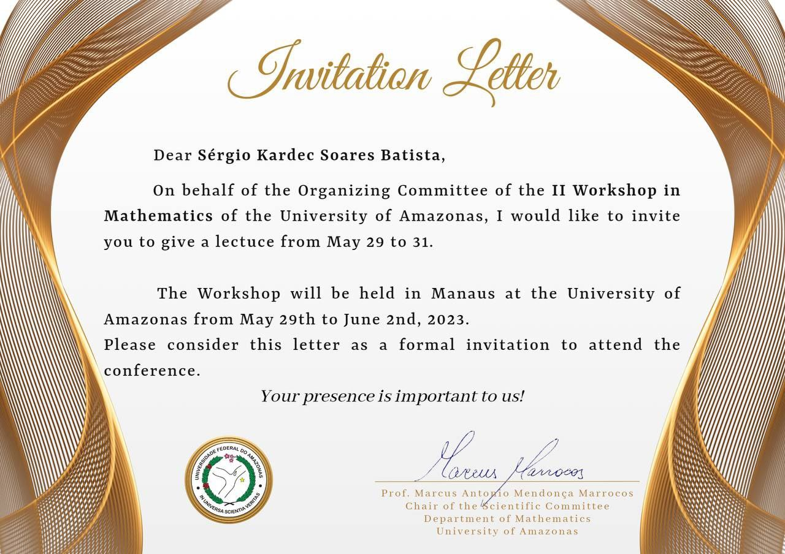

Minhas Realizações Acadêmicas
📌 PIBIC – Reconhecimento de Padrões
Durante minha iniciação científica, desenvolvi pesquisa em reconhecimento de padrões dentro da Estatística. O trabalho focou em métodos supervisionados, ou seja, em algoritmos treinados com exemplos rotulados para que fossem capazes de identificar estruturas e prever categorias em novos dados. Essa etapa foi fundamental para consolidar meus primeiros passos no aprendizado de máquina.
📌 CONIC – Apresentação Final
Apresentei os resultados do projeto de iniciação científica no CONIC, evento que reúne pesquisadores de diversas áreas. Foi uma oportunidade de compartilhar resultados e trocar experiências científicas, reforçando meu interesse em seguir carreira acadêmica e de pesquisa.

📌 Graduação em Matemática Aplicada
Concluí o bacharelado em Matemática Aplicada, com foco em otimização. Essa formação me deu base sólida em métodos numéricos, estatística e modelagem, preparando o terreno para minha atuação em problemas de grande complexidade envolvendo dados e incertezas.
📌 Mestrado em Otimização Intervalar
No mestrado, pesquisei otimização intervalar, área que trata de funções objetivo com parâmetros incertos variando dentro de intervalos. Essa abordagem permite tomar decisões mais robustas, especialmente em cenários de planejamentos anuais com custos variáveis, oferecendo soluções seguras mesmo diante de incertezas.
📌 Doutorado em Matemática Aplicada
Após ser selecionado em 5º lugar na UNICAMP e em 3º lugar na UFAM, iniciei meu doutorado em Matemática Aplicada na UFAM, com previsão de conclusão em 2028. Minha pesquisa foca no aprendizado de máquina, buscando desenvolver otimizadores alternativos ao gradiente descendente. O objetivo é encontrar métodos mais eficiêntes computacionalmente, que permitam maior eficiência em larga escala.
  Conferir📌 Participações em Eventos
Fui convidado a participar de um evento sobre aprendizado de máquinas em Python, onde apresentei resultados e interagi com outros pesquisadores da área. Esse convite marcou um reconhecimento importante do meu trabalho.
 Dentre outras centenas de eventos como ouvinte, confira no botão a seguir o mais recente:
Otimização Industrial
Dentre outras centenas de eventos como ouvinte, confira no botão a seguir o mais recente:
Otimização Industrial